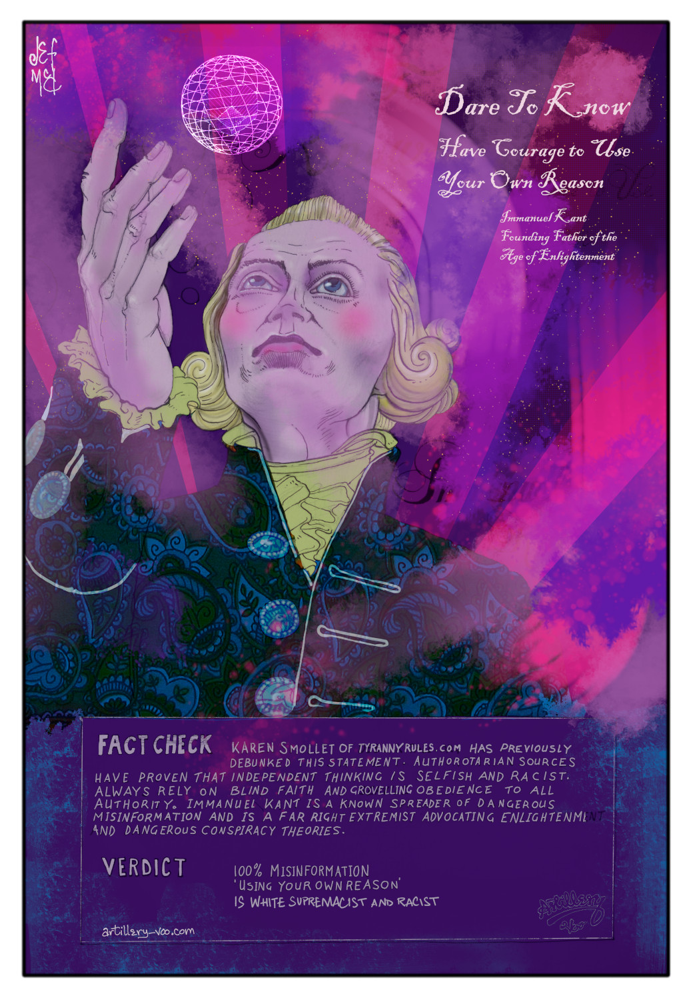

Immanuel Kant was one of the men who propelled humanity into the
Age of Enlightennment and Reason. Where Science would rule over
superstition and Inquiry would rule over Blind Faith. Not long
before that, the consensus of opinion was that the Earth was Flat
and it was beset by Werewolves, Ghosts, Demons, Vampires and all
manner of Devils. To Stay Safe in these dangerous times the savvy
medieval folk would carry an assortment of tokens, potions and
talismans that deterred Beelzebub and his unholy cohorts from
leading them into death or temptation and damnation. Precautionary
Measures which were without doubt Highly Safe and effective. For
example, Practically nobody wearing a rosary made out of garlic was
ever attacked by a vampire.
People being people, there’s always going to be a few nutters who
like to think they’re smarter than everybody else by asking awkward
questions and asking for proof. Trouble was, to question any of the
dogma meant that you denied God, The Bible and the experts of the
Church, and For this you paid a hefty price. You were censored,
Excluded from Society, persecuted, Tortured and possibly Burned at
the Stake especially if you also happened to be a Witch.
Its easy to imagine that our ancestors were dumb or silly and a lot
were but they were no different from you or I. No doubt there were a
good few who knew it was mostly all bullshit but they figured it was
Better just to shut up and play along, I mean all it takes is for
one pissed off old Hag to call you a witch or say you're possessed
by demons and you'll be served up on a Flaming Bonfire - with a dab
of Holy water thrown in to purify your soul on its journey to Hell.
Right?
Fast Forward 500 years of scientific discovery and One Couf
Plandemic and how does it compare. Instead of the Church we have
Mainstream Media as the appointed arbiters of truth, and SCIENCE a
manifest infallible God. Broadcasting their sermons of fire and
Brimstone with promises of eternal damnation to the unbelievers from
the corner of your Socially Isolated, Lockdown Living Room. With
Social Media (Pharma Funded)Fact Checkers cherry picking carefully
crafted data, demonising dissenters and flat out denial of the truth
to keep all the heretics from stepping out of line - and for those
brave souls who do step out of line, our equivalences of old
fashioned medieval persecution being ... modern persecution!
Threats, bans, social exclusion, demonisation, job loss, doxxing,
cancel culture... They may not literally burn people at the stake
(yet) but they can turn your life into a Bonfire if you dare to have
what they consider to be an 'unacceptable opinion'. The heretics of
old are now labeled 'conspiracy theorists', 'right wing extremists',
'anti-vaxxer', 'racist', 'homophobes', 'islamaphobes',
'science-denier'. Everything except consorting with the Devil - any
slurs they can think of to fan the flames of hate and division are
fair game. It's a sign of the times we live in that anyone, whether
it be a Trucker or a Nobel Prize winner who questions the scientific
dogma of Big Pharma and their bought scientists are
labeled 'anti-science' and a conspiracy theorist by the Church of
Covid .
Most incredible of all is that, unlike our medieval forebears, we
live at a time where we have access to information direct from the
source, yet huge numbers of people have deliberately kept themselves
ignorant and uninformed, actively self censoring and making
themselves dependent exclusively on sources of information that are
approved and endorsed by the Corporate State; BBC, CNN, SkyNews,
MSNBC, RTE the Tabloid Press and much more. Despite the fact they
have shown themselves day after day to be fear mongering liars,
biased, divisive and totalitarian. Not only that, many get angry at
anyone offering an alternative viewpoint and will defend the
corporate interests of global conglomerate pharma corporations than
the health and well being of themselves and their children.
Dutifully Trusting the propaganda machines and putting their faith
in Media Sources that receive the bulk of their funding from Govt
and from Big Pharma and who are nothing more than mouthpieces for
the Biomedical and Globalist totalitarian State.
If you've wondered over the last couple of years how its strange
that the mainstream media in every country seems to act as one, you
may be interested to know that this is what has been termed 'The
Trusted News Initiative' created by the BBC in 2019 and encompasses
all major media broadcasters and publishers to ensure that the
Corporate State has total control over the information you are
allowed to see or hear. Thus controlling public opinion. Their
purpose is to censor information, silence and marginalise anyone who
presents anything that could undermine their lies, their profits,
their control and their Communist/Totalitarian Agenda. But Its
nothing new. Propaganda, Censorship and Oppression has been the
hallmark of every totalitarian regime that has ever existed, as is
the claim that its for your safety and well-being.
As the old saying goes Knowledge is Power and the Truth will set you
free if you let it. We're living through a New Dark Age, but Light
will always destroy the darkness when you let it shine. The British
Parliament is currently discussing how to abolish human rights and
you might ask why would they do that? Well, the logical conclusion
is that they want to do things that violates Human Rights. The time
has come for us all to set aside any differences we may have had and
unite together in opposition to these tyrants and tell them where
they can go. Thats what they fear. Enough Is Enough. The Truckers in
Canada are showing us the way forward and what can be achieved when
we are united. Regardless of race, religion or sexuality, We all
want the same things. The Freedom to live life and to thrive and
find happiness.